What this page is
Side-by-side comparison of three verified sources for six stones. Folder names in the compilation are D-1…D-6 because those are the real sample names. Customer aliases MACHINE-1, M-1…M-6, and REC-1…REC-6 are labeled here and were not present as folders on this VM.
| User / V360 name | Source used | JSON MachineName |
|---|---|---|
| MACHINE-1 / customer machine | Customer_Captures/D-<stone>-01 | Machine 01 |
| Ideal / REC-1…REC-6 | Ideal_Reference/D-1…D-6 | Ideal Reference |
| B2B mini 5.0 EDF | V50_EDF_Reference/D-1…D-6 | V360 5.0 EDF |
Counts
- Stones compiled: 6
- JSON files parsed: 18 (failed: 0)
1.json–7.jsonfound: 0- HTML files in stone folders: 0
- Live MACHINE-1 folders found: 0
D-1 aliases: REC-1 / M-1
Declared stoneType (machine): Round
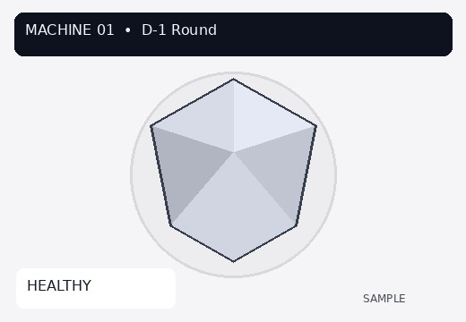
| Field | Machine 01 | Ideal | B2B mini 5.0 EDF |
|---|---|---|---|
| R, G, B | 205, 209, 221 | 204, 210, 220 | 205, 211, 221 |
| OldRGB (parsed) | 245, 244, 247 | 244, 244, 246 | 244, 245, 246 |
| NewRGB (parsed) | 249, 248, 251 | 247, 247, 249 | 247, 248, 249 |
| OldRGB → NewRGB distance | 6.928 | 5.196 | 5.196 |
| sharpness | 4 | 4 | 7 |
| contrast | |||
| TotalTime (raw) | 00:00:45 | 00:00:41 | 00:00:49 |
| TotalTime (seconds) | 45 | 41 | 49 |
| Camera | Canon EOS R8 | Canon EOS R8 | Canon EOS R8 |
| MachineName | Machine 01 | Ideal Reference | V360 5.0 EDF |
| AV / TV / ISO | 8.0 / 1/80 / 100 | 8.0 / 1/80 / 100 | 8.0 / 1/80 / 100 |
| WB / K | Color Temperature / 5600 | Color Temperature / 5600 | Color Temperature / 5600 |
| JSON width × height | 192 × 108 | 192 × 108 | 192 × 108 |
| ImageQuality | Fine | Fine | Fine |
| 0.json wrap style | direct-object | direct-object | direct-object |
Files in source: 0.json, still.jpg, video.mp4 present. 1.json–7.json and HTML absent.
D-2 aliases: REC-2 / M-2
Declared stoneType (machine): Oval
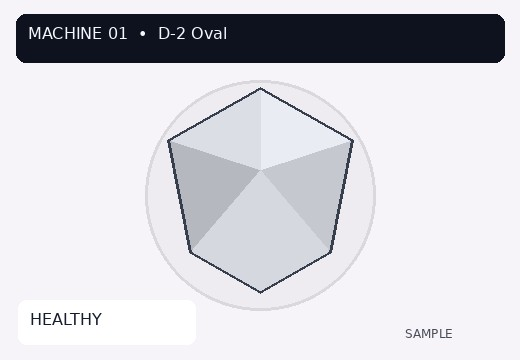
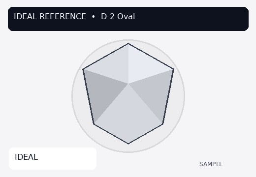
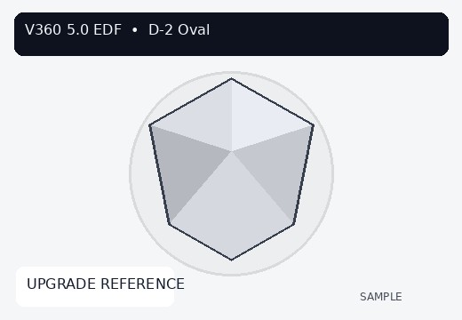
| Field | Machine 01 | Ideal | B2B mini 5.0 EDF |
|---|---|---|---|
| R, G, B | 210, 212, 220 | 208, 212, 218 | 209, 213, 219 |
| OldRGB (parsed) | 247, 244, 249 | 245, 245, 247 | 245, 246, 247 |
| NewRGB (parsed) | 251, 248, 253 | 248, 248, 250 | 248, 249, 250 |
| OldRGB → NewRGB distance | 6.928 | 5.196 | 5.196 |
| sharpness | 4 | 4 | 7 |
| contrast | |||
| TotalTime (raw) | 00:00:46 | 00:00:42 | 00:00:50 |
| TotalTime (seconds) | 46 | 42 | 5 |
| Camera | Canon EOS R8 | Canon EOS R8 | Canon EOS R8 |
| MachineName | Machine 01 | Ideal Reference | V360 5.0 EDF |
| AV / TV / ISO | 8.0 / 1/80 / 100 | 8.0 / 1/80 / 100 | 8.0 / 1/80 / 100 |
| WB / K | Color Temperature / 5600 | Color Temperature / 5600 | Color Temperature / 5600 |
| JSON width × height | 192 × 108 | 192 × 108 | 192 × 108 |
| ImageQuality | Fine | Fine | Fine |
| 0.json wrap style | direct-object | direct-object | direct-object |
Files in source: 0.json, still.jpg, video.mp4 present. 1.json–7.json and HTML absent.
D-3 aliases: REC-3 / M-3
Declared stoneType (machine): Cushion
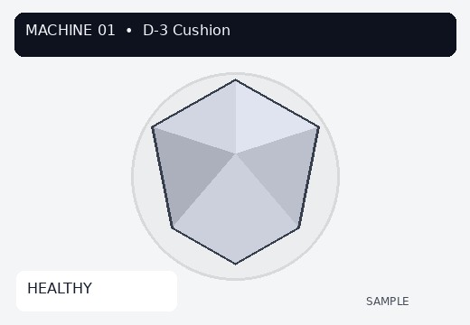
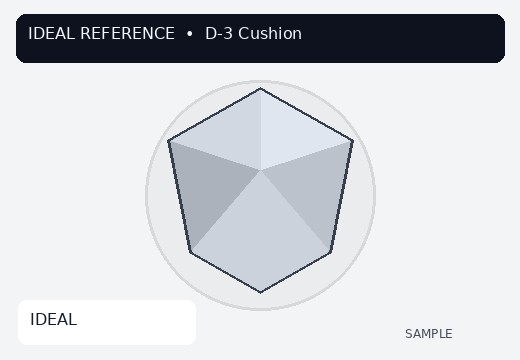
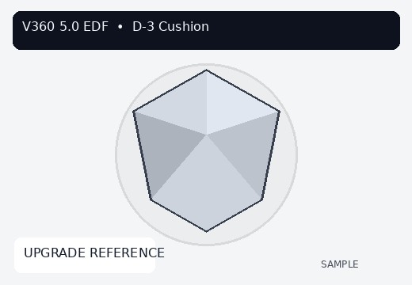
| Field | Machine 01 | Ideal | B2B mini 5.0 EDF |
|---|---|---|---|
| R, G, B | 200, 204, 216 | 200, 206, 216 | 201, 207, 217 |
| OldRGB (parsed) | 243, 245, 246 | 243, 244, 246 | 243, 245, 246 |
| NewRGB (parsed) | 247, 249, 250 | 246, 247, 249 | 246, 248, 249 |
| OldRGB → NewRGB distance | 6.928 | 5.196 | 5.196 |
| sharpness | 4 | 4 | 7 |
| contrast | |||
| TotalTime (raw) | 00:00:47 | 00:00:43 | 00:00:51 |
| TotalTime (seconds) | 47 | 43 | 51 |
| Camera | Canon EOS R8 | Canon EOS R8 | Canon EOS R8 |
| MachineName | Machine 01 | Ideal Reference | V360 5.0 EDF |
| AV / TV / ISO | 8.0 / 1/80 / 100 | 8.0 / 1/80 / 100 | 8.0 / 1/80 / 100 |
| WB / K | Color Temperature / 5600 | Color Temperature / 5600 | Color Temperature / 5600 |
| JSON width × height | 192 × 108 | 192 × 108 | 192 × 108 |
| ImageQuality | Fine | Fine | Fine |
| 0.json wrap style | direct-object | direct-object | payload-pascal-case |
Files in source: 0.json, still.jpg, video.mp4 present. 1.json–7.json and HTML absent.
D-4 aliases: REC-4 / M-4
Declared stoneType (machine): Princess
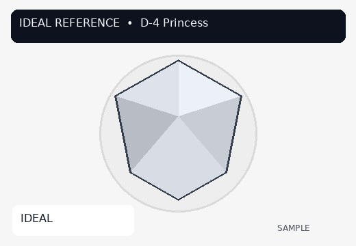
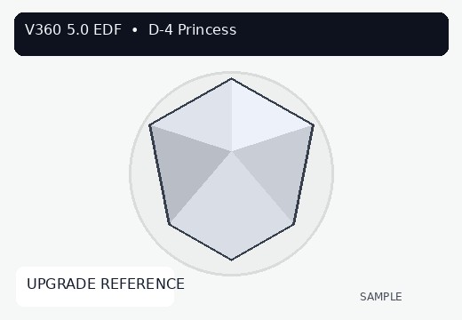
| Field | Machine 01 | Ideal | B2B mini 5.0 EDF |
|---|---|---|---|
| R, G, B | 213, 215, 225 | 212, 216, 224 | 213, 217, 225 |
| OldRGB (parsed) | 247, 246, 248 | 246, 246, 247 | 246, 247, 247 |
| NewRGB (parsed) | 251, 250, 252 | 249, 249, 250 | 249, 250, 250 |
| OldRGB → NewRGB distance | 6.928 | 5.196 | 5.196 |
| sharpness | 4 | 4 | 7 |
| contrast | |||
| TotalTime (raw) | 00:00:48 | 00:00:44 | 00:00:52 |
| TotalTime (seconds) | 48 | 44 | 52 |
| Camera | Canon EOS R8 | Canon EOS R8 | Canon EOS R8 |
| MachineName | Machine 01 | Ideal Reference | V360 5.0 EDF |
| AV / TV / ISO | 8.0 / 1/80 / 100 | 8.0 / 1/80 / 100 | 8.0 / 1/80 / 100 |
| WB / K | Color Temperature / 5600 | Color Temperature / 5600 | Color Temperature / 5600 |
| JSON width × height | 192 × 108 | 192 × 108 | 192 × 108 |
| ImageQuality | Fine | Fine | Fine |
| 0.json wrap style | direct-object | direct-object | direct-object |
Files in source: 0.json, still.jpg, video.mp4 present. 1.json–7.json and HTML absent.
D-5 aliases: REC-5 / M-5
Declared stoneType (machine): Emerald
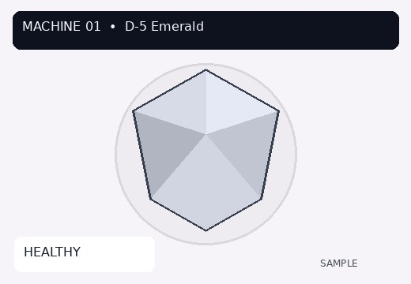
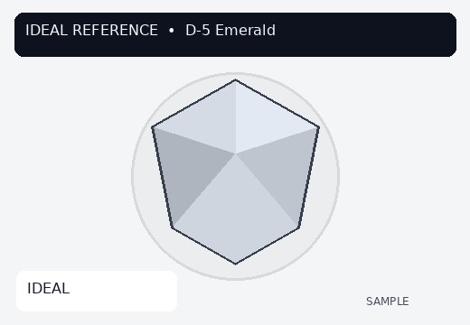
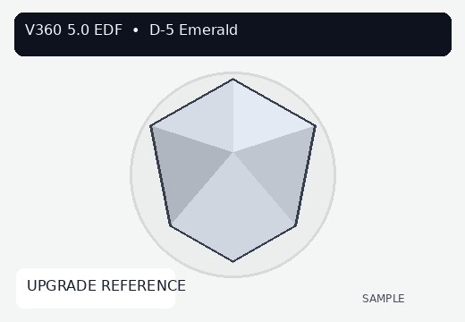
| Field | Machine 01 | Ideal | B2B mini 5.0 EDF |
|---|---|---|---|
| R, G, B | 204, 209, 221 | 202, 209, 219 | 203, 210, 220 |
| OldRGB (parsed) | 246, 244, 248 | 244, 245, 246 | 244, 246, 246 |
| NewRGB (parsed) | 250, 248, 252 | 247, 248, 249 | 247, 249, 249 |
| OldRGB → NewRGB distance | 6.928 | 5.196 | 5.196 |
| sharpness | 4 | 4 | 7 |
| contrast | |||
| TotalTime (raw) | 00:00:49 | 00:00:45 | 00:00:53 |
| TotalTime (seconds) | 49 | 45 | 53 |
| Camera | Canon EOS R8 | Canon EOS R8 | Canon EOS R8 |
| MachineName | Machine 01 | Ideal Reference | V360 5.0 EDF |
| AV / TV / ISO | 8.0 / 1/80 / 100 | 8.0 / 1/80 / 100 | 8.0 / 1/80 / 100 |
| WB / K | Color Temperature / 5600 | Color Temperature / 5600 | Color Temperature / 5600 |
| JSON width × height | 192 × 108 | 192 × 108 | 192 × 108 |
| ImageQuality | Fine | Fine | Fine |
| 0.json wrap style | direct-object | array-envelope | direct-object |
Files in source: 0.json, still.jpg, video.mp4 present. 1.json–7.json and HTML absent.
D-6 aliases: REC-6 / M-6
Declared stoneType (machine): Pear
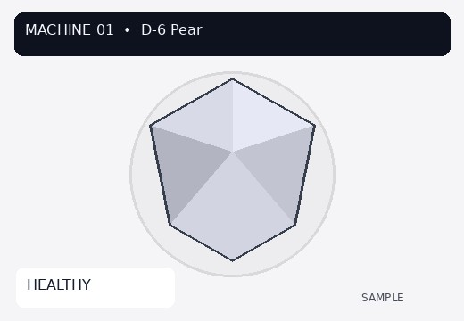
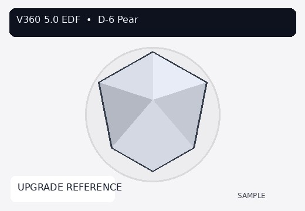
| Field | Machine 01 | Ideal | B2B mini 5.0 EDF |
|---|---|---|---|
| R, G, B | 206, 209, 221 | 206, 211, 221 | 207, 212, 222 |
| OldRGB (parsed) | 245, 245, 247 | 245, 244, 247 | 245, 245, 247 |
| NewRGB (parsed) | 249, 249, 251 | 248, 247, 250 | 248, 248, 250 |
| OldRGB → NewRGB distance | 6.928 | 5.196 | 5.196 |
| sharpness | 4 | 4 | 7 |
| contrast | |||
| TotalTime (raw) | 00:00:50 | 00:00:46 | 00:00:54 |
| TotalTime (seconds) | 5 | 46 | 54 |
| Camera | Canon EOS R8 | Canon EOS R8 | Canon EOS R8 |
| MachineName | Machine 01 | Ideal Reference | V360 5.0 EDF |
| AV / TV / ISO | 8.0 / 1/80 / 100 | 8.0 / 1/80 / 100 | 8.0 / 1/80 / 100 |
| WB / K | Color Temperature / 5600 | Color Temperature / 5600 | Color Temperature / 5600 |
| JSON width × height | 192 × 108 | 192 × 108 | 192 × 108 |
| ImageQuality | Fine | Fine | Fine |
| 0.json wrap style | array-envelope | payload-wrapper | direct-object |
Files in source: 0.json, still.jpg, video.mp4 present. 1.json–7.json and HTML absent.
Assumptions and limits
- Live D:\demo Machine-1 / IDEAL_JSON files were not on this VM. Compilation uses the v360-machine-health sample_capture_data fixtures at commit 1af6f9d.
- Machine 01 (flat suffix -01) is treated as the MACHINE-1 analog because that is the only complete customer machine labeled Machine 01 in the fixtures.
- Stone folders are named D-1..D-6 because those are the actual source folder names. REC-1..REC-6 and M-1..M-6 are documented aliases only.
- RGB Euclidean distance uses visionProfile.currentProfile R/G/B integers (or parsed equivalents).
- OldRGB strings such as RGB(247, 244, 249) are parsed to three integers before distance is computed.
- Wrapped JSON (array envelope, payload wrapper, Pascal-case Payload) is unwrapped using the same capture/payload walk as the V360 generator.
- 1.json–7.json and HTML were not present in these sample stone folders and are labeled absent. They were not invented.
- video.mp4 files are 29-byte ASCII placeholders, not playable video.
- still.jpg pixel size is 520x360 on disk. JSON width/height declare 1920x1080. Both values are reported; neither is altered.
- No composite health score was computed. Upstream validation report scores are cited only as a separate-document note.
Source files read
/tmp/v360-machine-health/executed_source/sample_capture_data/flat/Customer_Captures/D-1-01/0.json/tmp/v360-machine-health/executed_source/sample_capture_data/flat/Customer_Captures/D-2-01/0.json/tmp/v360-machine-health/executed_source/sample_capture_data/flat/Customer_Captures/D-3-01/0.json/tmp/v360-machine-health/executed_source/sample_capture_data/flat/Customer_Captures/D-4-01/0.json/tmp/v360-machine-health/executed_source/sample_capture_data/flat/Customer_Captures/D-5-01/0.json/tmp/v360-machine-health/executed_source/sample_capture_data/flat/Customer_Captures/D-6-01/0.json/tmp/v360-machine-health/executed_source/sample_capture_data/flat/Ideal_Reference/D-1/0.json/tmp/v360-machine-health/executed_source/sample_capture_data/flat/Ideal_Reference/D-2/0.json/tmp/v360-machine-health/executed_source/sample_capture_data/flat/Ideal_Reference/D-3/0.json/tmp/v360-machine-health/executed_source/sample_capture_data/flat/Ideal_Reference/D-4/0.json/tmp/v360-machine-health/executed_source/sample_capture_data/flat/Ideal_Reference/D-5/0.json/tmp/v360-machine-health/executed_source/sample_capture_data/flat/Ideal_Reference/D-6/0.json/tmp/v360-machine-health/executed_source/sample_capture_data/flat/V50_EDF_Reference/D-1/0.json/tmp/v360-machine-health/executed_source/sample_capture_data/flat/V50_EDF_Reference/D-2/0.json/tmp/v360-machine-health/executed_source/sample_capture_data/flat/V50_EDF_Reference/D-3/0.json/tmp/v360-machine-health/executed_source/sample_capture_data/flat/V50_EDF_Reference/D-4/0.json/tmp/v360-machine-health/executed_source/sample_capture_data/flat/V50_EDF_Reference/D-5/0.json/tmp/v360-machine-health/executed_source/sample_capture_data/flat/V50_EDF_Reference/D-6/0.json